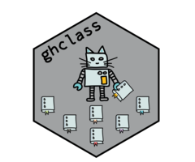

Retrieve information about GitHub Actions workflows and their runs.
Source:R/action.R, R/action_artifacts.R, R/action_artifacts_delete.R, and 5 more
action.Rdaction_workflows()- retrieve details on repo workflows.action_runs()- retrieve details on repo workflow runs.action_status()- DEPRECATED - retrieve details on most recent workflow runs.action_runtime()- retrieves runtime durations for workflow runs.action_artifacts()- retrieve details on available workflow artifacts.action_artifact_download()- downloads artifact(s) into a local directory.action_artifact_delete()- deletes artifact(s).action_run_logs()- downloads workflow run log(s) into a local directory.
Usage
action_artifacts(
repo,
filter = NULL,
exclude = FALSE,
keep_expired = FALSE,
which = c("latest", "all"),
filter_branch = NULL,
exclude_branch = FALSE
)
action_artifact_delete(repo, ids)
action_artifact_download(
repo,
dir,
filter = NULL,
exclude = FALSE,
filter_branch = NULL,
exclude_branch = FALSE,
keep_zip = FALSE,
nest = FALSE,
overwrite = FALSE,
ids = action_artifacts(repo, filter = filter, exclude = exclude, filter_branch =
filter_branch, exclude_branch = exclude_branch)
)
action_run_logs(
repo,
dir,
run_ids = action_runs(repo),
keep_zip = FALSE,
overwrite = FALSE
)
action_runs(
repo,
branch = NULL,
event = NULL,
status = NULL,
created = NULL,
limit = 1
)
action_status(
repo,
branch = NULL,
event = NULL,
status = NULL,
created = NULL,
limit = 1
)
action_runtime(
repo,
branch = NULL,
event = NULL,
status = NULL,
created = NULL,
limit = 1
)
action_workflows(repo, full = FALSE)Arguments
- repo
Character. Address of repository in
owner/nameformat.- filter
Character. Regex pattern to filter artifacts by artifact name.
- exclude
Logical. If
TRUE, exclude artifact names matchingfilterinstead of including them. DefaultFALSE.- keep_expired
Logical. Should expired artifacts be returned. Default
FALSE.- which
Character. Either
"latest"to return only the most recent of each artifact or"all"to return all artifacts.- filter_branch
Character. Regex pattern to filter artifacts by branch name.
- exclude_branch
Logical. If
TRUE, exclude branches matchingfilter_branchinstead of including them. DefaultFALSE.- ids
Integer or data frame. Artifact ids to be downloaded or deleted. If a data frame is passed then the
idcolumn will be used.- dir
Character. Path to the directory where logs or artifacts will be saved.
- keep_zip
Logical. Should the log zips be saved (
TRUE) or their contents extracted (FALSE). DefaultFALSE.- nest
Logical. If
TRUE, place each repo's artifacts under adir/{repo_name}/subdirectory; otherwise flatten intodir/with repo-prefixed names. DefaultFALSE.- overwrite
Logical. Should existing files be overwritten. Default
FALSE.- run_ids
Integer or data frame. Run ids for which to download logs. If a data frame is passed then the
run_idcolumn will be used. Defaults to the most recent run for each repo (i.e.action_runs(repo)).- branch
Character. Filter runs associated with a particular branch.
- event
Character. Filter runs for triggered by a specific event. See here for possible event names.
- status
Character. Filter runs for a particular status or conclusion (e.g.
completedorsuccess).- created
Character. Filter runs for a given creation date. See here for date query syntax.
- limit
Numeric. Maximum number of workflow runs to return. Default
1. Note results are chronologically ordered, solimit = 1will return the most recent action run for a repository.- full
Logical. Should all workflow columns be returned. Default
FALSE.
Value
action_workflows(), action_runs(), action_runtime(), and action_artifacts
all return tibbles containing information on requested repos' available workflows,
recent workflow runs, workflow runs runtimes, and generated artifacts
respectively.
action_artifact_download() returns an invisible character vector containing the
paths of the extraction directories for each successfully downloaded artifact
(NA entries indicate failures).
action_artifact_delete() returns an invisible data frame containing repository names and
ids of the deleted artifacts.
action_run_logs() returns an invisible character vector containing the paths of all
downloaded log files or directories.